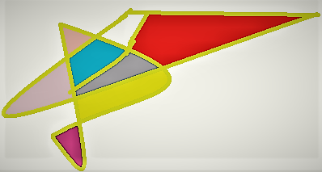

Text_Design_Picture

Quando olhamos para essa imagem vemos aqui várias cores de suas tonalidades no momento em que estava realizando pensei fazer um lado mais diferente que outro na interligação na área da tecnologia é conhecido muito os softwares importantes que contém os seus requesitos,a sua finalidades para os projetos deste a documenção do usuário que toda hora necessita da sua participação dos diagramas de suas metodologias como a Kamba muito útil para o planejamento.